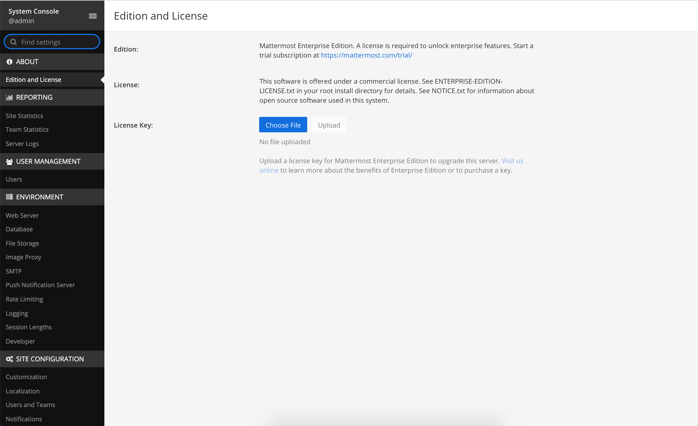
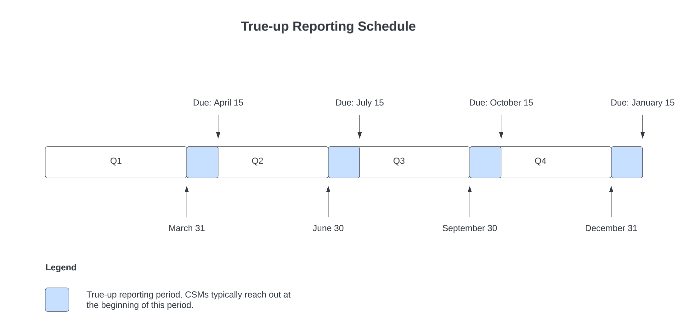

Self-hosted subscriptions#
Buy a subscription#
From Mattermost v7.7 you can buy a Mattermost subscription from within Mattermost:
In Mattermost, select View Plans in the global header or via System Console > View plans.
Select Upgrade. A minimum of ten users is required.
Provide payment details.
Enter the number of user seats you’re purchasing. This number has to be equal to, or greater than, the current number of active users in your Mattermost deployment.
Select Upgrade.
When your purchase is complete, a license is automatically applied to instance and your subscription is active immediately.
If your deployment doesn’t have internet access, please continue to use the Customer Portal or, contact our sales team for assistance.
Mattermost v7.6 and earlier releases#
If you’re using Mattermost v7.6 and below, you can buy a Mattermost subscription via the Customer Portal page. If you haven’t created an account yet, follow the steps provided. Otherwise, you can log in with your existing credentials. When you buy a Mattermost subscription for a self-hosted deployment, you’ll receive an activation license.
Once you’re logged in:
Choose a subscription, and enter the number of users in the Order summary field. This indicates the number of users you can have on this subscription’s instance. For more information about how users are defined, see our FAQ.
(Optional for Enterprise subscriptions) You can add Premier Support. This is an additional cost and is automatically added to your order total.
Select Next Step.
Enter your billing and payment information.
Accept the Terms.
Select Complete.
Choose Download the license key.
Note
If you experience any problems with your transaction, please contact our Support team via the Customer Portal. If possible, keep the error message/number that you received on hand as it may help with their investigation.
Apply your license#
Once downloaded, your Mattermost license is ready to use and is applied via the Mattermost System Console.
System admin access is required in order to apply the license. If you’re not a Mattermost system admin, contact your organization’s Mattermost system admin for assistance.
Mattermost installed#
On the Customer Portal Subscriptions page, select Download License to download the license key for your subscription. In Mattermost, follow the steps provided in System Console > About > Edition and License to apply your license key.
You can also use the mmctl to apply the license.
Mattermost not yet installed#
If you haven’t yet installed and deployed a Mattermost instance, visit the Deployment Guide to get started. For information on creating a system admin account, visit our Administrator Tasks documentation.
View subscription information#
Self-hosted subscriptions purchased via the Customer Portal are stored and listed in the Customer Portal.
Here you can view license details, including their start date, end date and licensed number of users, and have full access to your billing history, making it easier to manage purchases and renewal dates.
You can access your Customer Portal account to view information about your:
Subscription purchases
Licenses
Customer Portal account password
Organization information
Payment methods
Renewals
Active users (available in a future release)
Subscription and licenses not purchased via the Customer Portal won’t be listed.
Add more users to your subscription#
If you have a self-hosted license in the Customer Portal, you can add additional users to your subscription via the Customer Portal page.
Select Purchase additional seats.
Enter your account and billing details.
When the transaction is complete, select whether you’d like to download your updated license or having it emailed to you.completes, they will have to either
Once you have your updated license, upload it via System Console > License and Edition.
This process adds additional users to your existing subscription and is not a new license. Your license renewal date doesn’t change when you add additional users and receive an updated license. Billing is pro-rated based on the time left in your billing cycle.
If you don’t have a self-hosted license in the Customer Portal and want to add users, contact us.
Quarterly true-up reports from v7.9#
From Mattermost v7.9, the reporting period is still the same, but we’ve introduced a process that no longer requires you to take screenshots.
To send the report, a system admin must navigate to the System Console and open either the Site Statistics or Team Statistics pages.
If the current date is within the true-up reporting period, a panel will be visible at the top of the page with a button to share your system’s statistics directly to Mattermost.
If your system is air-gapped (meaning it doesn’t have access to the internet), the system admin can download the system statistcs which can then be shared with your Customer Success Manager from a device that’s not air-gapped.
Tip
Not sure where to find the site statistics or team statistics? Please reach out to your account executive, Customer Success Manager, orders@mattermost.com, or support@mattermost.com for help.
Quarterly true-up report prior to v7.9#
When you buy an annual Mattermost subscription, you agree to provide quarterly reports of the actual number of active users within your system. An active user is a user who has an account in a workspace and does not show as Inactive in System Console > User Management > Users.
We’ll send you an email notice around the end of the quarter reminding you to send us your report.
To send this report, take a screenshot of System Console > Site Statistics and send in a reply email back to us.
Please ensure your screenshot is taken from the top of the page and includes the Total Active Users metric.
Please include the date of the screenshot in the file name.
We don’t need your server address, so if it appears on your screenshot, you can redact it from the image.
Tip
Not sure where to take the screenshot? Please reach out to your account executive, Customer Success Manager, orders@mattermost.com, or support@mattermost.com for help.
If you have more total active users than you purchased in your annual subscription, your Customer Success Manager will provide you with a true-up quote for the new users added.
The additional invoice will be pro-rated based on the number of months left in your subscription term, including the months for the calendar quarter for the time you pull the report. We will not provide downward adjustments. Mattermost will invoice based on Mattermost’s current list prices.
Renew your subscription#
From Mattermost Server v5.32, you can renew your self-hosted Mattermost subscription with a credit card if you have a standard Mattermost contract. When you renew your license, you can also increase the number of active users.
If you haven’t upgraded to v5.32, contact Mattermost Support at support@mattermost.com to renew your license.
If you’re a reseller, have a non-standard contract, or want to adjust the number of active users on your license during the license period, please contact Mattermost Sales at sales@mattermost.com.
System Admins will be alerted 60 days prior to license expiry via a banner in Mattermost. Select Renew license now to start the renewal process in the Customer Portal. You can also dismiss the banner and renew your license at a later date via System Console > Edition and License.
When you select Renew license now, you’re taken to the renewal page in the Customer Portal, which lists your license information and account details. This is pre-populated based on the email address associated with your existing license subscription.
Process your license renewal#
Enter your Account Details, Additional Contact, and Payment Details.
Confirm the Mattermost Edition.
You can upgrade within the Customer Portal, but it’s not possible to downgrade.
Confirm the listed number of active users is correct.
You can increase the number of licensed users, but you can’t decrease it.
Select Complete purchase.
An email with the new license key and information on how to upload the license in the System Console will be sent to the email address provided.
You can watch a video overview of the renewal process on YouTube:
Frequently asked questions#
What is a true up and why is the true up notice necessary?#
A true up is our quarterly request for you to provide a screenshot of your instance data to determine if you have more active users now than when you bought your subscription.
As your organization grows, you may need to add additional users during your subscription period. Mattermost needs to have insight into changes in your active user count so that we can charge you appropriately for your self-hosted license usage. Additionally, we don’t want to over estimate/charge active users at your renewal time.
When you receive the quarterly true up notice from Mattermost, please take a screenshot of your active user count which you can find in System Console > Site Statistics. Then reply to the email with the attached screenshot.
How do I renew my subscription if I don’t have internet access?#
If you don’t have access to the internet, please email support@mattermost.com for assistance.
Can I use the same license key on multiple self-hosted servers?#
License keys for unlocking the advanced features in Mattermost can only be applied to a single deployment. A deployment consists of either a single Mattermost server or multiple linked Mattermost servers in a High Availability configuration with access to a single database.
Customers who are eligible to purchase the Premier Support add-on are licensed to run with a single deployment of Mattermost license key in production and up to four non-production deployments of Mattermost (for example: development, staging, user acceptance testing, etc.)
Is my license key available immediately?#
Yes, once your payment is successfully processed your license is available to download immediately.
How will I know when to renew my subscription?#
You’ll be notified 60 days prior to your subscription expiry, via a blue banner displayed at the top of your Mattermost window. This banner is only visible to system admins.
You can select Renew license now to begin the renewal process. You can also select the x to dismiss the notification. The notification is reactivated when your browser is refreshed or you reload the Mattermost Desktop App.
How long does it take to renew a subscription?#
Once you’ve started the renewal process, we’ll be in contact with you to confirm your order and send you the order form. There may be additional paperwork required. Once we have the signed order form and (if applicable) the necessary paperwork from you, we’re able to process the renewal and issue your license key within 24 hours.
What happens to my subscription if I don’t renew in time?#
If you don’t renew within the 60-day renewal period, a 10-day grace period is provided. During this period your Mattermost installation runs as normal, with full access to commercial features. During the grace period, the notification banner is not dismissable.
When the grace period expires, your Professional or Enterprise plan is downgraded to the Free plan and other plan features are disabled.
What happens when my subscription expires?#
If you don’t renew within the 10-day grace period, your Mattermost version is automatically downgraded to Free plan so you can still access and use Mattermost. However, subscription features will no longer be available, and if you are currently using them, the functionality will no longer be accessible.
When you renew, the subscription features will become available with the previous configuration (provided no action such as user migration has been taken).
Can other members of my organization use the Customer Portal account to manage our subscription?#
We currently support a single account/user per organization. The ability to add multiple users per organization will be available in a future release.
Where can I find the license agreement for Mattermost Enterprise Edition?#
Mattermost Enterprise Edition is the name for the binary of the Mattermost self-hosted Professional and Enterprise editions. This edition can be used for free without a license key as commercial software functionally equivalent to the open source Mattermost Team Edition licensed under MIT. When a license key is purchased and applied to Mattermost Enterprise Edition, additional features unlock. The license agreement for Mattermost Enterprise Edition is included in the software and also available here.
How do I delete my Customer Portal account?#
Please contact Mattermost Support for assistance with deleting your Customer Portal account.
What happens to my subscription when I delete my account?#
When an account is deleted, the license key remains valid. When the subscription is close to expiring, you’ll need to create a new profile in order to renew it.